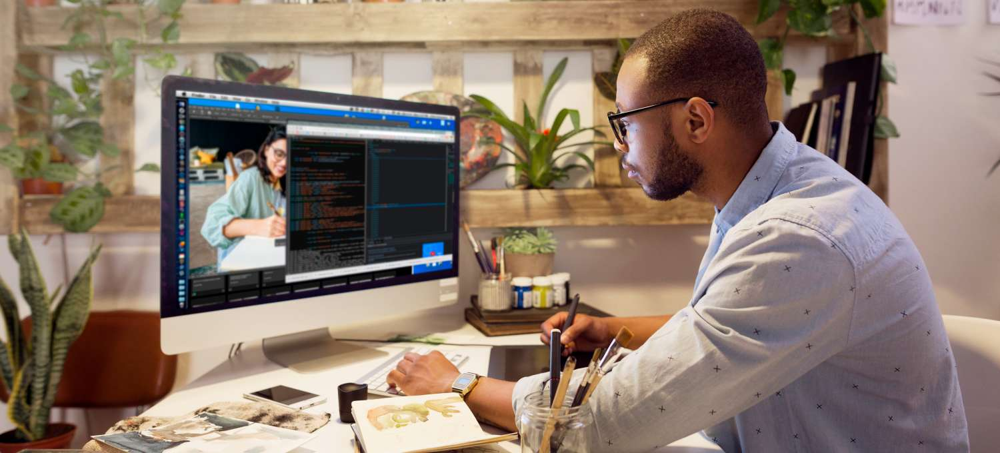

Fase 2: Designe og Utforske
I fase 2 av webutvikling, bygger vi videre på de funnene og informasjonen vi samlet i fase 1, og videreutvikler disse til å skape førsteutkast og prototypen av nettsiden. Her har vi et stort fokus på UX (User Experience), dette gjør vi gjennom å følge standard og brukervennlige designvalg. Et eksempel på dette er valg av logo i toppen av venstre hjørne, knapper til de forskjellige seksjonene av nettsiden eller en eventuell søkefunksjon i headeren. Dette er standard utforminger mange nettsider har, og er med på å skape en trygghet og tillit blant brukerne.
Brukervennlighet
Brukervennlighet er et veldig sentralt tema i denne fasen. Vi kan se på fem nøkkelpunkter for brukervennlighet: «For det første må et system være lett å lære, det bør være effektivt å bruke, det må være lett å huske over tid hvordan systemet brukes, systemet bør minimalisere sjansen for feil og være tolerant for feil, og systemet må være behagelig å bruke.» (Sandnes, 2018, s. 16). Brukervennlighet skal altså være at systemet og nettsiden skal være enkelt håndterlig for alle. Som nevnt i introduksjonssiden til webutvikling, snakket vi om WCAG-valideringen. WCAG er en test og retningslinjer utviklere må bruke for å sørge for at nettsiden er brukervennlig for alle, selv de med funksjonsnedsettelser. I Norge er det faktisk lovpålagt gjennom likestillings- og diskrimineringsloven at alle IKT-systemer skal være likt for alle. Det er derfor lovpålagt at nettsystemer skal tilfredsstille WCAG nivå 1 og 2. (Sandnes, 2018, s. 32-33).
Papirprototyping
Papirprototyping er når man for hånd med penn og papir lager en prototype av nettsiden. Her tegner man opp de forskjellige sidene, slik at man raskt og enkelt kan teste utseendet på nettsiden uten å måtte legge mye tid i det tekniske arbeidet med å kode den. Dette grensesnittet kan oppnås på et par minutter, og det er veldig enkelt å tegne et nytt ark om man er misfornøyd eller ser forbedringspotensiale med en gang. Nettlesermalen gjør det veldig enkelt i forbindelse med webutvikling, da man får en standard mal for nettlesere som man kan tusje og tegne inn i for å prototype frem ideen sin. (Sandnes, 2018, s. 270-271).
Wireframes
Wireframes er et visuelt diagram av hvordan systemet skal se ut. Det viser hvordan de ulike elementene forholder seg til hverandre og hvordan det er strukturert. Det er med på å kartlegge hvordan siden skal se ut uten å gå altfor mye i detalj, siden det fokuserer mest på funksjonaliteten. Wireframes er ofte brukt i overgangen fra idé til endelig design. (Miro, u.å.).
Brukertesting
Brukertesting handler om å innhente tilbakemeldinger fra brukerne om designet og utformingen av systemet. Her skal brukeren gi sin ærlige tilbakemelding om hva de syntes fungerer, hva som ikke fungerer, hvor lett det er å bruke det, etc. Her er det også viktig å fokusere på bruken brukeren gjør, og ikke bare hva de tenker og mener om produktet. Vi er ikke ute etter hva deres personlige meninger er om produktet, men heller hvordan det er for dem å bruke det, og hvilke utfordringer de eventuelt har opplevd med det. (Sandnes, 2018, s. 291).